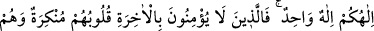
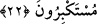
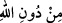

20. Allah’ı bırakıp da taptıkları (putlar), hiçbir şey yaratamazlar. Çünkü onlar
kendileri yaratılmışlardır.
“Allah’ı bırakıp da taptıkları” kâfirlerin ibâdet ettikleri ilâhlar, tanrılar, varlıklardan
asla “hiçbir şey yaratamazlar.” Çünkü bu onların şânından değildir. Çünkü âcizdirler.
Kur’an’da duânın “ibâdet” mânâsında kullanıldığı çoktur.
“ Allah’ı bırakıp geçerek demektir. Çünkü ‘dûne’, bir şeyden mekan olarak
daha aşağısı anlamınadır. Sonra bu kelime, hal ve dereceler arasında farklılığı
göstermek için istiâre olarak kullanılmıştır. Sonra daha da genişletilerek bir sınırı
bırakıp diğerine geçen, bir hükmü bırakıp diğerine geçen kimse için kullanılır olmuştur.
“Çünkü onlar kendileri yaratılmışlardır.” Yâni onların durumu ve zâtlarının gereği
yaratılmış olmalarıdır. Çünkü onlar, mümkin varlıklardır, mâhiyet ve varlıkları
îtibarıyla kendilerini yaratıp var edene muhtaçtırlar.
el-Kâmûs’ta der ki: Allah’ın sıfatlarından olan el-Hâlık, bir şeyi yoktan var eden,
daha önce bir benzeri görülmemiş şekilde yaratan demektir.
21. Onlar diriler değil, ölülerdir. Ne zaman diriltileceklerini de bilmezler.
“Onlar diriler değil,” yâni, nutfe ve yumurta gibi hayâta elverişli değildirler. Çünkü
mutlak olarak ölüdürler. “Ölülerdir” o putlar, hayâtı olmayan cansız varlıklardır. Onlar
yaratılmış vücûdu ile ölülerdir. Putlar hakkında ‘mevât’ denilmemiştir. Çünkü onlar
rûhu olan varlıklar şeklinde yapılmışlardır. el-Kâmûs’ta der ki: ‘Müvât’ ve ‘mevât’
rûhu olmayan şeyler ve sâhibi olmayan yerler için kullanılır.
“Ne zaman diriltileceklerini de bilmezler.” yâni bu ilâhlar, kendilerine ibâdet
edenlerin kabirlerinden ne zaman diriltileceklerini bile bilmezler. Bu ifâdede diriltilme
vaktini bilmenin ülûhiyyetin gereği olduğu bildirilmektedir. Yine mutlaka ölüm
kendilerine gelip çatacağı gibi inkâr ediyor olsalar da mutlaka diriltilecekleri üstü
kapalı olarak kendilerine söylenmektedir.
22. İlâhınız bir tek ilahtır. Fakat âhirete inanmayanlar var ya, onların kalpleri
inkârcı, kendileri de böbürlenen kimselerdir.
“İlâhınız bir tek ilâhtır” eşsiz ve tektir, hiçbir şey hiçbir hususta O’na ortak olamaz.